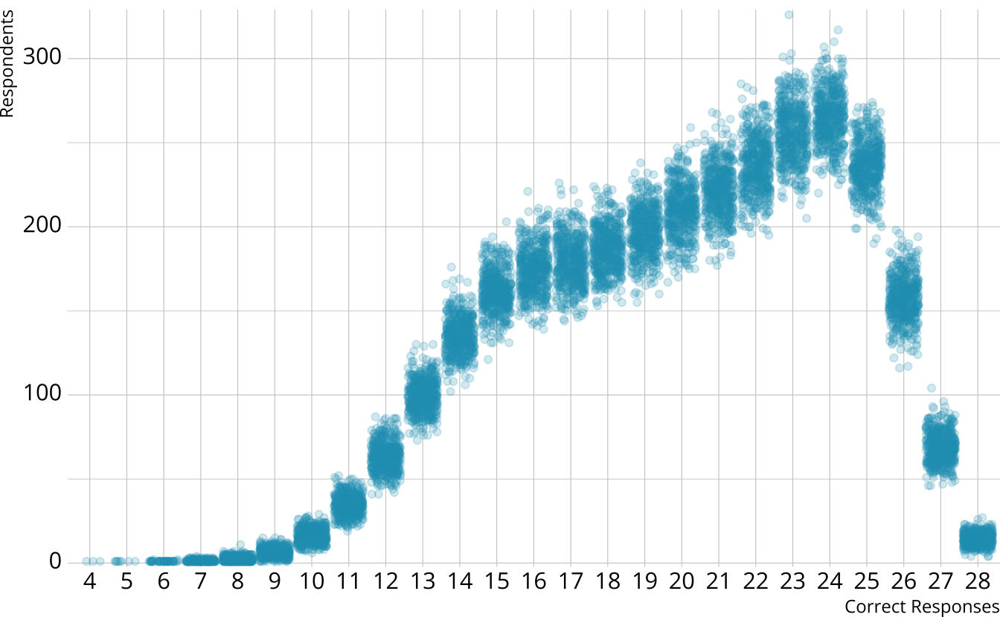
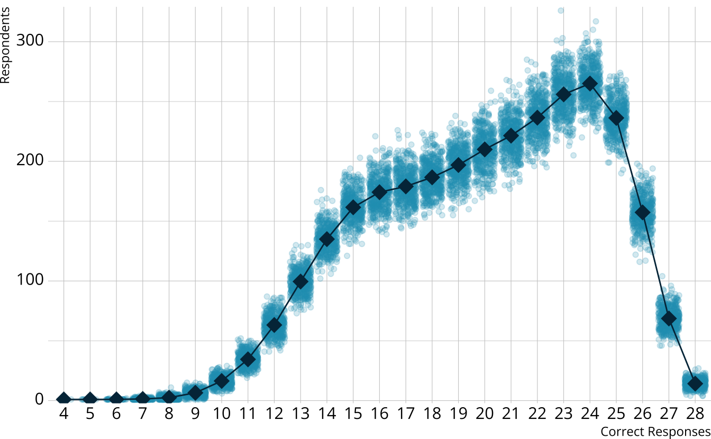
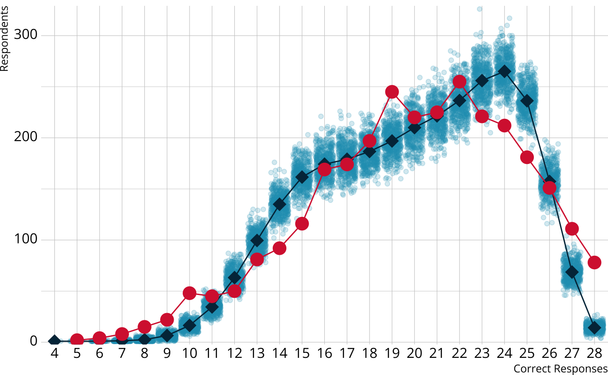
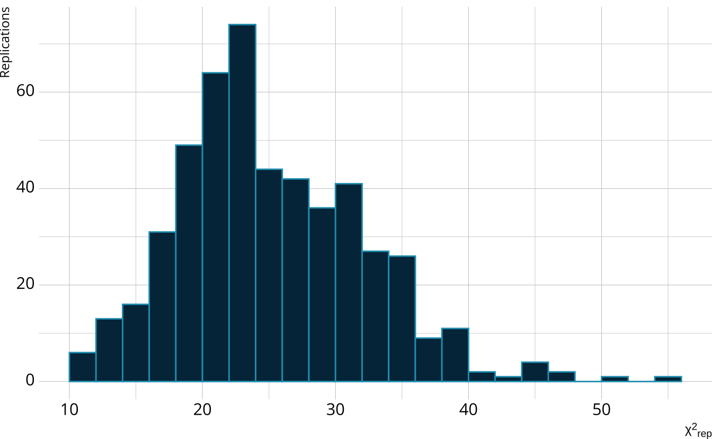
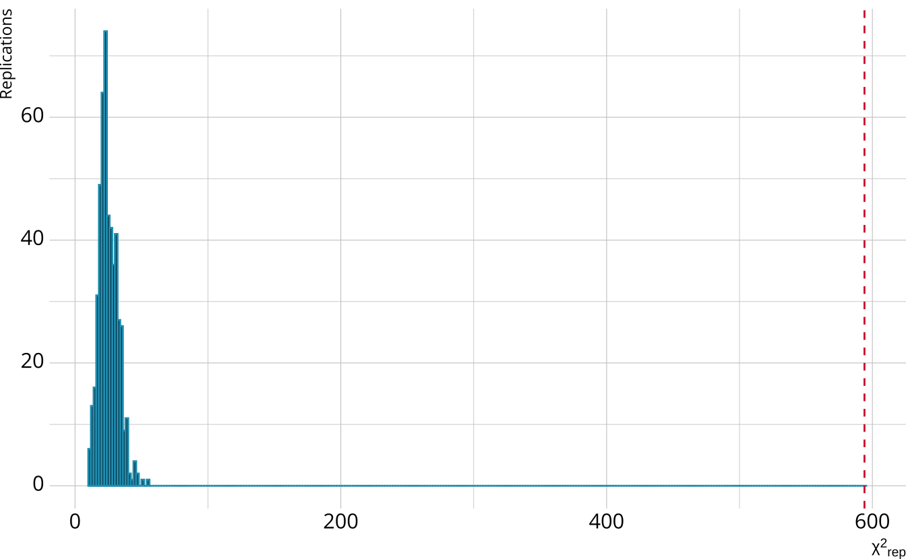

# A tibble: 1 × 8
m2 df pval rmsea ci_lower ci_upper `90% CI` srmsr
<dbl> <int> <dbl> <dbl> <dbl> <dbl> <chr> <dbl>
1 513. 325 1.33e-10 0.0141 0.0117 0.0163 [0.0117, 0.0163] 0.0319With Stan and measr
Absolute fit: How well does the model represent the observed data?
Relative fit: How do multiple models compare to each other?
Reliability: How consistent and accurate are the classifications?
fit_* functions are used for calculating absolute fit indices.
Open evaluation.Rmd and run the setup chunk.
Calculate the M2 statistic for the MDM LCDM model using add_fit().
Extract the M2 statistic. Does the model fit the data?
03:00





Calculate the raw score PPMC for the MDM LCDM
Does the model fit the observed data?
04:00
Diagnose problems with model-level
Identify particular items that may not be performing as expected
Identify potential dimensionality issues
# A tibble: 224 × 7
item class obs_cond_pval ppmc_mean `2.5%` `97.5%` ppp
<fct> <chr> <dbl> <dbl> <dbl> <dbl> <dbl>
1 E1 [0,0,0] 0.701 0.694 0.662 0.723 0.324
2 E1 [1,0,0] 0.782 0.798 0.712 0.905 0.597
3 E1 [0,1,0] 1 0.810 0.757 0.865 0
4 E1 [0,0,1] 0.611 0.694 0.662 0.723 1
5 E1 [1,1,0] 0.996 0.930 0.909 0.952 0
6 E1 [1,0,1] 0.486 0.798 0.712 0.905 1
7 E1 [0,1,1] 0.831 0.810 0.757 0.865 0.222
8 E1 [1,1,1] 0.926 0.930 0.909 0.952 0.654
9 E2 [0,0,0] 0.741 0.739 0.708 0.767 0.455
10 E2 [1,0,0] 0.835 0.739 0.708 0.767 0
# ℹ 214 more rows# A tibble: 378 × 7
item_1 item_2 obs_or ppmc_mean `2.5%` `97.5%` ppp
<fct> <fct> <dbl> <dbl> <dbl> <dbl> <dbl>
1 E1 E2 1.61 1.39 1.07 1.73 0.102
2 E1 E3 1.42 1.49 1.21 1.80 0.666
3 E1 E4 1.58 1.39 1.13 1.70 0.093
4 E1 E5 1.68 1.48 1.09 1.93 0.164
5 E1 E6 1.64 1.40 1.09 1.76 0.112
6 E1 E7 1.99 1.70 1.37 2.07 0.0505
7 E1 E8 1.54 1.55 1.16 2.03 0.503
8 E1 E9 1.18 1.25 1.01 1.52 0.707
9 E1 E10 1.82 1.59 1.28 1.96 0.108
10 E1 E11 1.61 1.64 1.32 2.01 0.566
# ℹ 368 more rows# A tibble: 105 × 7
item class obs_cond_pval ppmc_mean `2.5%` `97.5%` ppp
<fct> <chr> <dbl> <dbl> <dbl> <dbl> <dbl>
1 E1 [0,1,0] 1 0.810 0.757 0.865 0
2 E1 [0,0,1] 0.611 0.694 0.662 0.723 1
3 E1 [1,1,0] 0.996 0.930 0.909 0.952 0
4 E1 [1,0,1] 0.486 0.798 0.712 0.905 1
5 E2 [1,0,0] 0.835 0.739 0.708 0.767 0
6 E2 [0,1,0] 1 0.907 0.888 0.925 0
7 E2 [0,0,1] 0.694 0.739 0.708 0.767 0.998
8 E2 [1,1,0] 0.975 0.907 0.888 0.925 0
9 E2 [1,0,1] 0.424 0.739 0.708 0.767 1
10 E3 [0,1,0] 0.365 0.414 0.379 0.448 0.997
# ℹ 95 more rows# A tibble: 80 × 7
item_1 item_2 obs_or ppmc_mean `2.5%` `97.5%` ppp
<fct> <fct> <dbl> <dbl> <dbl> <dbl> <dbl>
1 E1 E13 1.80 1.45 1.15 1.79 0.0215
2 E1 E17 2.02 1.40 1.05 1.82 0.005
3 E1 E26 1.61 1.25 1.02 1.53 0.0075
4 E1 E28 1.86 1.41 1.09 1.76 0.008
5 E2 E4 1.73 1.36 1.09 1.67 0.0055
6 E2 E14 1.64 1.24 1.01 1.52 0.0025
7 E2 E15 1.92 1.45 1.07 1.89 0.021
8 E3 E23 1.83 1.50 1.22 1.82 0.0205
9 E3 E24 1.63 1.39 1.17 1.62 0.0205
10 E4 E5 2.81 2.09 1.58 2.67 0.012
# ℹ 70 more rowsCalculate PPMCs for the conditional probabilities and odds ratios for the MDM model
What do the results tell us about the model?
05:00
First, we need another model to compare
ecpe_dina <- measr_dcm(
data = ecpe_data, qmatrix = ecpe_qmatrix,
resp_id = "resp_id", item_id = "item_id",
type = "dina",
method = "mcmc", backend = "cmdstanr",
iter_warmup = 1000, iter_sampling = 500,
chains = 4, parallel_chains = 4,
file = "fits/ecpe-dina"
)
ecpe_dina <- add_criterion(ecpe_dina, criterion = "loo")loo_compare() elpd_diff se_diff
lcdm 0.0 0.0
dina -808.6 39.3 Estimate a DINA model for the MDM data
Add PSIS-LOO and WAIC criteria to both the LCDM and DINA models for the MDM data
Use loo_compare() to compare the LCDM and DINA models
05:00
Reporting reliability depends on how results are estimated and reported
Reliability for:
$pattern_reliability
p_a p_c
0.7390218 0.6637287
$map_reliability
$map_reliability$accuracy
# A tibble: 3 × 8
attribute acc lambda_a kappa_a youden_a tetra_a tp_a tn_a
<chr> <dbl> <dbl> <dbl> <dbl> <dbl> <dbl> <dbl>
1 morphosyntactic 0.896 0.729 0.787 0.775 0.942 0.851 0.924
2 cohesive 0.852 0.675 0.704 0.699 0.892 0.877 0.822
3 lexical 0.916 0.750 0.610 0.802 0.959 0.947 0.855
$map_reliability$consistency
# A tibble: 3 × 10
attribute consist lambda_c kappa_c youden_c tetra_c tp_c tn_c gammak
<chr> <dbl> <dbl> <dbl> <dbl> <dbl> <dbl> <dbl> <dbl>
1 morphosyntactic 0.834 0.557 0.685 0.646 0.853 0.778 0.868 0.852
2 cohesive 0.806 0.562 0.681 0.607 0.817 0.826 0.781 0.789
3 lexical 0.856 0.552 0.626 0.670 0.875 0.894 0.776 0.880
# ℹ 1 more variable: pc_prime <dbl>
$eap_reliability
# A tibble: 3 × 5
attribute rho_pf rho_bs rho_i rho_tb
<chr> <dbl> <dbl> <dbl> <dbl>
1 morphosyntactic 0.734 0.687 0.573 0.884
2 cohesive 0.728 0.575 0.506 0.785
3 lexical 0.758 0.730 0.587 0.915# A tibble: 2,922 × 9
resp_id `[0,0,0]` `[1,0,0]` `[0,1,0]` `[0,0,1]` `[1,1,0]` `[1,0,1]` `[0,1,1]`
<fct> <dbl> <dbl> <dbl> <dbl> <dbl> <dbl> <dbl>
1 1 7.70e-6 9.83e-5 5.11e-7 0.00131 0.0000875 0.0436 0.00208
2 2 5.85e-6 7.43e-5 2.00e-7 0.00306 0.0000344 0.0974 0.00196
3 3 5.63e-6 1.67e-5 1.73e-6 0.00211 0.0000701 0.00970 0.0154
4 4 3.21e-7 4.06e-6 9.79e-8 0.000296 0.0000167 0.00985 0.00215
5 5 1.17e-3 8.30e-3 3.57e-4 0.00127 0.0353 0.00933 0.00921
6 6 2.97e-6 1.59e-5 9.08e-7 0.000912 0.0000651 0.00980 0.00663
7 7 2.97e-6 1.59e-5 9.08e-7 0.000912 0.0000651 0.00980 0.00663
8 8 3.73e-2 8.52e-5 1.34e-3 0.518 0.0000259 0.000586 0.439
9 9 6.55e-5 2.02e-4 2.00e-5 0.00657 0.000921 0.00933 0.0479
10 10 4.05e-1 4.15e-1 3.58e-3 0.0379 0.0611 0.0180 0.00780
# ℹ 2,912 more rows
# ℹ 1 more variable: `[1,1,1]` <dbl># A tibble: 2,922 × 3
resp_id profile prob
<fct> <chr> <dbl>
1 1 [1,1,1] 0.953
2 2 [1,1,1] 0.897
3 3 [1,1,1] 0.973
4 4 [1,1,1] 0.988
5 5 [1,1,1] 0.935
6 6 [1,1,1] 0.983
7 7 [1,1,1] 0.983
8 8 [0,0,1] 0.518
9 9 [1,1,1] 0.935
10 10 [1,0,0] 0.415
# ℹ 2,912 more rows# A tibble: 1 × 2
accuracy consistency
<dbl> <dbl>
1 0.739 0.664# A tibble: 2,922 × 4
resp_id morphosyntactic cohesive lexical
<fct> <dbl> <dbl> <dbl>
1 1 0.997 0.955 1.00
2 2 0.995 0.899 1.00
3 3 0.983 0.988 1.00
4 4 0.998 0.990 1.00
5 5 0.988 0.980 0.955
6 6 0.992 0.989 1.00
7 7 0.992 0.989 1.00
8 8 0.00436 0.444 0.961
9 9 0.945 0.984 0.999
10 10 0.545 0.123 0.115
# ℹ 2,912 more rows# A tibble: 2,922 × 4
resp_id morphosyntactic cohesive lexical
<fct> <int> <int> <int>
1 1 1 1 1
2 2 1 1 1
3 3 1 1 1
4 4 1 1 1
5 5 1 1 1
6 6 1 1 1
7 7 1 1 1
8 8 0 0 1
9 9 1 1 1
10 10 1 0 0
# ℹ 2,912 more rows# A tibble: 3 × 3
attribute accuracy consistency
<chr> <dbl> <dbl>
1 morphosyntactic 0.896 0.834
2 cohesive 0.852 0.806
3 lexical 0.916 0.856# A tibble: 2,922 × 4
resp_id morphosyntactic cohesive lexical
<fct> <dbl> <dbl> <dbl>
1 1 0.997 0.955 1.00
2 2 0.995 0.899 1.00
3 3 0.983 0.988 1.00
4 4 0.998 0.990 1.00
5 5 0.988 0.980 0.955
6 6 0.992 0.989 1.00
7 7 0.992 0.989 1.00
8 8 0.00436 0.444 0.961
9 9 0.945 0.984 0.999
10 10 0.545 0.123 0.115
# ℹ 2,912 more rows# A tibble: 3 × 2
attribute informational
<chr> <dbl>
1 morphosyntactic 0.573
2 cohesive 0.506
3 lexical 0.587Add reliability information to the MDM LCDM and DINA models
Examine the attribute classification indices for both models
04:00
Evaluating diagnostic classification models
With Stan and measr